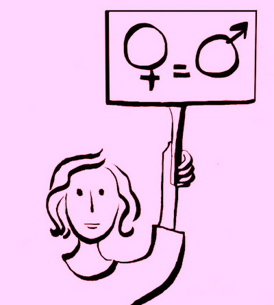

پذيرش > سایت نوشته ها > من هم میخواهم سهمی داشته باشم! / وبلاگ زن زمینی


 من هم میخواهم سهمی داشته باشم! / وبلاگ زن زمینی من هم میخواهم سهمی داشته باشم! / وبلاگ زن زمینی
1 تیر 1386 - - نسخه قابل چاپ
با دوستم میترا در پارک قرار داشتیم. میترا یکی از دوستان خوبیست که ضمن جمعآوری امضا پیدایش کردم. او دوسه روز پیش از آن، در دومین کارگاه کرج شرکت کرده بود و بسیار مشتاق همکاری با کمپین!
آن روز یکی از عصرهای زیبای اردیبهشت ماه بود و بارانهای پیدرپی بهاری پارک را از همیشه قشنگتر و سرسبزتر کرده بود. میترا دختر و پسر دهدوازده سالهی خود اوستا و مانا را هم آورده بود. روی نیمکتی نشستیم. ما حرف میزدیم. میترا از احساس خوبش از شرکت در کارگاه میگفت و بچهها سرخوشانه روی چمنها و لابهلای گلها دنبال هم میدویدند و فریاد شادی سرمیدادند.
ناگهان میترا گفت:
 موافقی امضا جمع کنیم؟ ورقه و دفترچه همراهت هست؟ موافقی امضا جمع کنیم؟ ورقه و دفترچه همراهت هست؟
من همیشه دفترچه و ورقهی امضا در کیفم دارم، اما... بچهها چه؟
خوب، اونها را هم با خودمون میبریم. بگذار بهشون بگم.
بچهها گفتند اول بستنی بعد امضا جمع کردن!
(میترا قبلا با زبان ساده اهداف کمپین را برایشان گفته بود و آنها سر کلاس با معلمشان در این باره صحبت کرده بودند)
از دکهی توی پارک دو بستنی چوبی برایشان خریدیم و راه افتادیم.
اولین مقصد آلاچیق بزرگ و سرپوشیدهی پارک بود که مرکز تجمع زنان محل است. طبق یک قرارداد نانوشته، در این چند سال، این آلاچیق یواش یواش به تصرف خانمها درآمده بود.
آلاچیق گردی که دورتا دور آن خانمها مینشینند و باهم درددل میکنند. اگر آقایی وارد آن شود با قطع شدن صحبتها خودش احساس میکند بهتر است برود جایی دیگر بنشیند.
حدود بیست خانم دور تا دور آلاچیق نشسته بودند. من و میترا وسط ایستادیم و گفتیم با اجازه میخواهیم چند دقیقه وقتتان را بگیریم. همه با کنجکاوی گفتند بفرمایید.
داشتیم در مورد کمپین یک میلیون امضا میگفتیم و تبعیضهایی که در قانون هست، که چشمم به چهرهی آشنایی خورد. خانم حسنزاده سومین باری بود که این حرفها را از زبان من میشنید. آن دوبار امضا نکرده بود و اینبار با لبخندی در گوشههای لب به من گوش میداد. یکی دونفر مأیوسانه گفتند:
ایبابا، چه فایده! چی رو میخواهید عوض کنید؟
و خانم حسنزاده تأئید کرد.
منم همینو بهش گفتم اوندفعه.
میترا گفت: ما تنهایی چیزی رو نمیتونیم عوض کنیم. ولی اگه همهباهم باشیم و بخواهیم، حتما میتونیم.
سوالها شروع شد.
مگه میشه قانونو عوض کرد؟
کی به حرفای ما گوش میکنه!
تا آنجایی که میتوانستیم با صبر و حوصله جواب میدادیم.
یک خانم نسبتا مسن گفت:
آخه دخترم این مردا هستن که خرج خانواده رو درمیارن. باید هم ارث و دیه بیشتر از ما ببرن!
دیدم وقتش است. رفتم جلو و دست خانم حسنزاده رو گرفتم و گفتم:
همین خانم حسنزاده در شرکت شوهرش همهکارهست. من چند بار به شرکتشون مراجعه کردم.تقریبا تموم مدیریت اونحا با این خانمه! الان خانمها هیچ از شوهرشون کم ندارن.
خانم حسنزاده گل از گلش شکفت و گفت خواهش میکنم.
یا خانم سرداری رو که در همین محل "انجمن ....." را میگرداند حتما همهی شما میشناسید؟
تقریبا همه گفتند:
بله بله، خانم سرداری واقعا سرداره!
ایشون یکی از دوستای منه. خوب اینم یه زن! چی کم داره از یک مرد؟
همهمه در گرفت:
هیچی، واقعا هیچی!
خانم حسنزاده زودتر از بقیه ورقه را از من گرفت و گفت:
بده امضا کنم. حق با توئه. اینجا هم ا مضا نکنم. در یه جمع دیگه میای ازم امضا میگیری.
و با خنده برایشان تعریف کرد که دو بار دیگر خواستهام ازش امضا بگیرم و او از زیرش در رفته.
خانم مأیوس هم گرفت امضا کرد. خانم مسن گفت:
غروب شده و اینجا تاریکه. من چشمم نمیبینه.
اَوِستا پسر میترا که بستنیاش را تمام کرده بود با خوشحالی چراغقوهای از جیبش درآورد و ورقه را برایش روشن کرد.
خانم دیگری به او گفت پسرم خیر ببینی بیا برای منم بگیر تا امضا کنم. مانا دوید گفت منم دارم.
خلاصه که کار اوستا و مانا درآمد.
وقتی امضاها را در آلاچیق گرفتیم به سمت نیمکتها رفتیم. هوا دیگر واقعا تاریک شده بود. در یک نیمکت دو نامزد جوان با مادر دختر نشسته بودند. بعد از خواندن ورقه هر سه زیر نور چراغ قوه بچهها امضا کردند. گوشهای دیگر زن و شوهری موکتی انداخته بودند و چایی میخوردند. بعد از چند سوال آنها هم امضا کردند.
آنقدر امضا گرفتیم که فقط یک ورقه برایمان مانده بود. دفترچهها هم تمام شده بود و فقط یکی از نسخههای دو صفحهای که مریم -یکی دیگر از بچههای کمپین- از روی دفترچه خلاصه کرده و تابپ کرده بود در کیفمان بود.
میترا گفت من اینطرفها یک لوازمالتحریر فروشی میشناسم که فتوکپی هم میگیرد.
رفتیم آنجا. صاحب مغازه موقع فتوکپی گرفتن کنجکاو شد که این ورقهها چیست.
برایش توضیح دادیم. گفت :
میشه من هم امضا کنم و یک نسخه برای خانمم ببرم؟
با خوشحالی گفتیم چرا که نه!
امضا کرد. یک خانم و یک آقا هم منتظر نوبت بودند. آنها هم که موضوع را شنیده بودند امضا کردند. هر دو گفتند میشه یک نسخه هم به ما بدید؟
با خوشحالی به آنها هم یکی یک نسخه دادیم.
خانم گفت لطف شمارهتونو هم پشتش بنویسید تا وقتی پرشد براتون بیارم.
شمارهام را برایش نوشتم. شاید این دویستمین باری باشد که به درخواست کسی که امضا کرده، ورقه سفید به او میدادم با شماره تلفنی در پشت آن که بعد از پرشدن به من خبر دهد، اما متاسفانه از این دویست ورقه بیشتر از ده ورقهاش را برنگرداندهاند. و اگر امکان پیگیری برایم بوده و مثلا آدرسشان را داشتهآم و رفتهام سراغشان، علتش را مخالفت شدید شوهر یا پدر یا برادرشان عنوان کردهاند.( ایناست سایهی سنگین بعضی آقایان بر سر کمپین!)
فروشنده تعداد بسیار بیشتری از آنچه خواستهبودیم برایمان فتوکپی زد. فکر کردیم تعداد را درست متوجه نشده.
وقتی خواستیم حساب کنیم فروشنده محکم گفت:
امکان نداره پول بگیرم!
فکر کردیم تعارف است. از کیف چند اسکناس درآوردیم و جلویش گرفتیم.
گفتم که امکان نداره ازتون پولی بگیرم. شما که برای کار شخصی خودتون فتوکپی نگرفتید. برای من و این خانم و آقا و بقیهی مردم کار میکنید.
هر چه گفتیم این راهیست که خودمان انتخاب کردهایم زیر بار نرفت. گفت من هم میخواهم در این راه سهمی داشته باشم.
دوباره به پارک برگشتیم و باز امضا جمع کردیم تاحدی که باطریهای چراغ قوههای کوچک مانا و اوستا تقریبا تمام شد.
دوسهروز بعد میترا زنگ زد.
زهره کی دوباره میریم پارک؟ اوستا و مانا هر روز اصرار میکنن که دوباره با خاله زهره بریم امضا جمع کنیم. باطری نو هم برای چراغ قوههاشون خریدن!
وبلاگ زن زمینی
ارسال به
بالاترین
،
توییتر
،
فریندفید
،
فیسبوک
در همين بخش :
 یک خبر تلخ؟ یک قانونشکنی؟ یک تصمیم بخشنامهای جدید؟ یک خبر تلخ؟ یک قانونشکنی؟ یک تصمیم بخشنامهای جدید؟
چرا بایست به سکسوالیته پرداخت؟ / نفیسه آزاد
آزارجنسی خانگی؛ «قربانی» نه، «نجات یافته»
زنان، بزرگترین بازندگان بهار عرب
سانسور از دیدگاه جنسیتی/الهه امانی
ديگر بخش ها :
طرح یک میلیون امضا
|
مقالات
|
سایت نوشته ها
|
اخبار
|
گزارش كمپين
|
گفت و گو
|
علیه سکوت
|
كوچه به كوچه
|
نامه های شما
|
گزارش ویژه
|
گفتگو با اعضا
|
ویژه سالگرد کمپین
|
تصویر برابری
|
دل آرام علی
|
تریبون
|
مقالات
|
تاریخ شفاهی
|
خارج از چارچوب
|
کتابخانه
|
درباره کمپین
|
کمپین در شهرها
|
کمپین در بند
|
صدای تغییر
|
ویژه 22 خرداد
|
لایحه حمایت از خانواده
|
گالری
|
عشا مومنی
|
امیر یعقوبعلی
|
خدیجه مقدم
|
راحله عسگری زاده و نسیم خسروی
|
پروین اردلان،جلوه جواهری، مریم حسین خواه، ناهید کشاورز
|
زینب پیغمبرزاده
|
سعیده امین، سارا ایمانیان، محبوبه حسین زاده، ناهید کشاورز و همایون نامی
|
احترام شادفر
|
نسیم سرابندی زاده،فاطمه دهدشتی
|
وبلاگ مهمان
|
پرونده خرم آباد
|
دستگیری ها
|
مریم مالک
|
پرستو اللهیاری
|
مهرنوش اعتمادی
|
سمیه رشیدی
|
Other Languages
|
همراهان
|
«فراخوان کمپین ده روز با بهاره هدایت»
| English
|